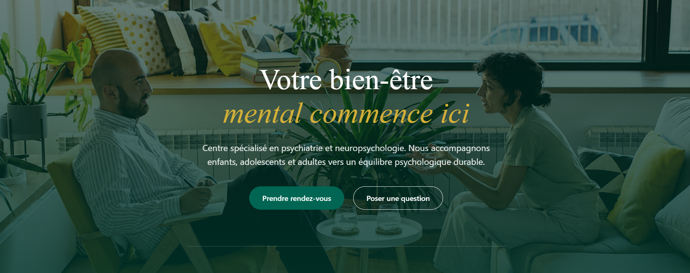
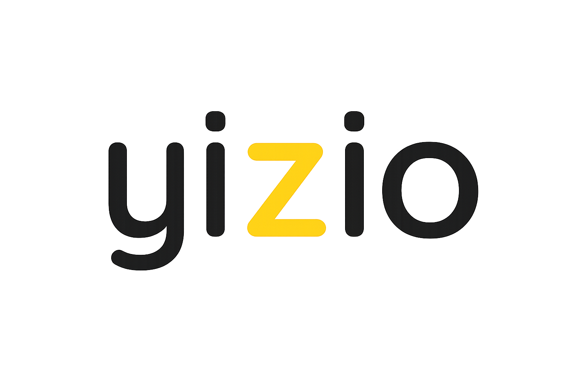
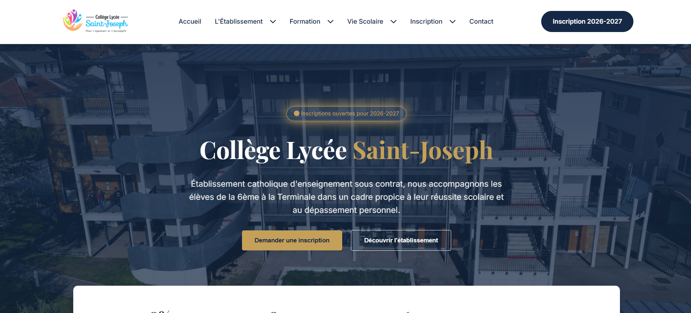

Refonte UX/UI
Cédiapsy

ContactChaque projet part d’un besoin concret : mieux présenter une activité, simplifier un parcours, rassurer un visiteur ou donner une image plus ambitieuse.



Chaque projet commence par la compréhension d’un objectif précis.
Le design traduit l’activité, le positionnement et la personnalité du projet.
L’esthétique accompagne toujours la compréhension et l’action.
Cette sélection présente à la fois des projets clients et un concept pédagogique. Le rôle de chaque projet est indiqué clairement.
Site vitrine · VTC
Création et optimisation d’un site WordPress pour un service de chauffeur VTC. L’objectif : moderniser l’image, faciliter la compréhension de l’offre et améliorer la visibilité du service en ligne.
Refonte UX/UI · Santé
Refonte complète d’un site spécialisé dans l’évaluation diagnostique et l’accompagnement en santé mentale. Le travail a porté sur la confiance, l’accessibilité, la lisibilité des services et la prise de rendez-vous.
Site institutionnel · Éducation
Concept de refonte UX/UI réalisé dans un cadre pédagogique, sans commande officielle de l’établissement. L’objectif était d’améliorer la lisibilité, l’accessibilité et la hiérarchisation d’un site scolaire dense.
Chaque écran doit aider le visiteur à comprendre, choisir ou agir. C’est cette logique qui guide la structure, les textes, les interactions et les choix visuels.
Découvrir le process